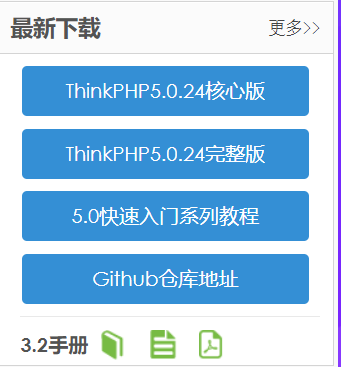
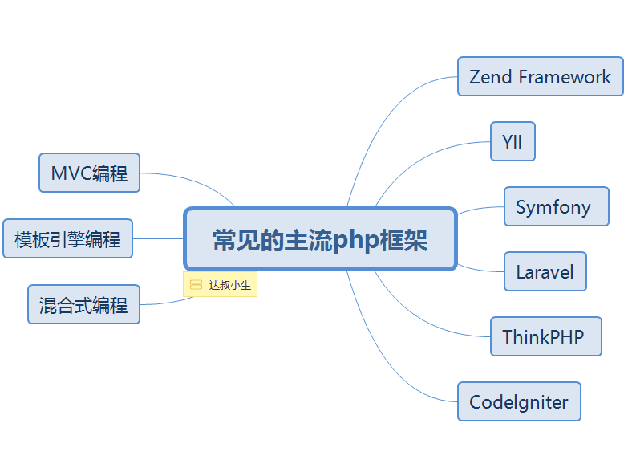
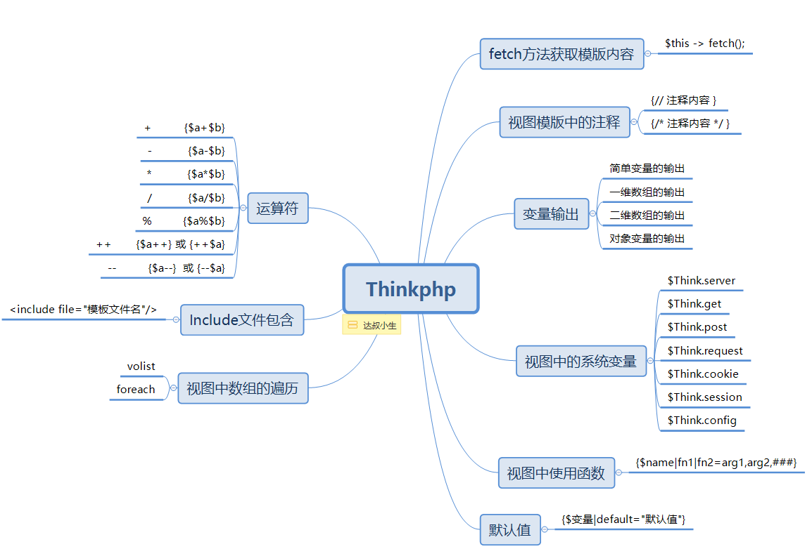
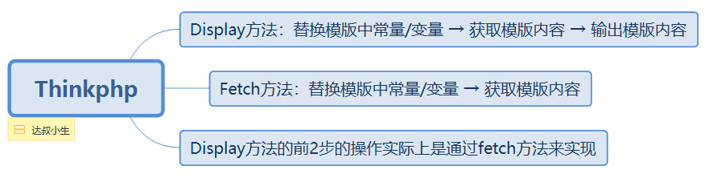
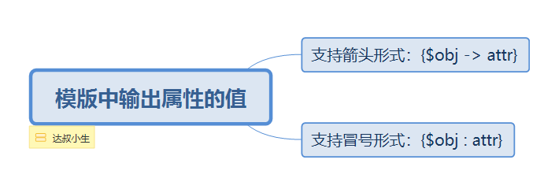
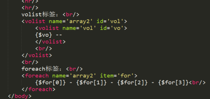
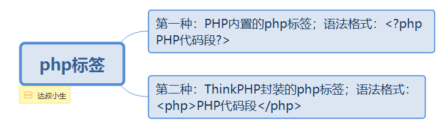
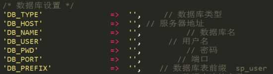
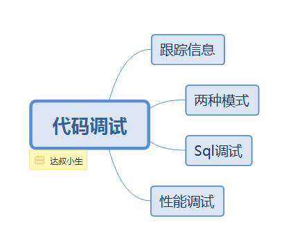

原文连接:https://www.cnblogs.com/dashucoding/p/10702969.html
thinkphp框架，是一堆代码（常量，方法，和类）的集合，框架是一个半成品的应用，还包含一些优秀的设计模式。
框架的使用，代码风格不一样，维护难，项目生命周期短，功能扩展存在局限，好处为，简单，快捷，高效，不需要关注底层结构，专注于业务逻辑
zend framework，官方框架，yii框架，美国华人，laravel轻量级的框架，国外框架，thinkphp国人开发。
什么是mvc，是一种设计模式，将用户的输入，逻辑，输出相分离。输入-控制器，逻辑-模型，视图-输出。
入口文件，对应的控制器，控制器到视图展示模板，和控制器到模型，模型是和数据库的，返回数据，控制器调用模型处理业务逻辑的。
混合编程阶段，模板引擎阶段，mvc阶段。
官网下载：
http://www.thinkphp.cn/
alpha版本为内测版本，beta版本为公测版本，rc版本为候选版本，r版本为release版本，发行版本。
application应用目录
public 存放图片，css等公共静态文件目录
thinkphp框架核心目录
.htaccess分布式配置文件
composer.json给compose软件使用的说明文件
index.php项目入口文件
thinkphp目录下
behavior行为文件目录
org为功能扩展目录
think最核心的目录
vendor第三扩展目录


模板内容获取方法：
$this -> display(); 展示模板$this -> fetch(); 获取模板（有返回值）public function login(){
//展示模板
// $this -> display();
$str = $this -> fetch();
// dump打印
dump($str);
}dump 打印变量，打印方法
thinkphp中的注解是属于服务端的注解，不会在浏览器中输出，而html的会。
public function test(){
$array = array('da','dashu','dashucoding');
//变量分配
$this -> assign('array',$array);
// 函数模板
$this -> display();
}入口文件：
header('Content-Type:text/html;charset=utf8');public function test(){
// 实例化student对象
$stu = new Student();
$stu -> id=1;
$stu -> name=dashu;
// 变量分配
$this -> assign('stu', $stu);
// 展示模板
$this -> display();
}
获取服务器的相关信息
获取get请求的信息
获取post请求的信息
获取get和post中信息
获取cookie中的信息
获取session中的信息
获取ThinkPHP中所有配置文件的一个总和
获取get请求中的id {$Think.get.id}public function test() {
// 展示模板
$this -> display();
}$Think.server.path
$Think.get.id
$Think.request.pid
$Think.cookie.PHPSESSID
$Think.config.DEFAULT_MODULE语法格式：
{$变量 | 函数名1 | 函数名2 = 参数1，参数2，...}函数名1：表示需要使用的第一个函数
函数名2：表示需要使用的第二个函数
参数1、参数2：函数2的参数
// 模板中函数使用
public function test() {
// 定义时间戳
$time = time();
//传递给模板
$this -> assign('time', $time);
// 展示模板
$this -> display();
}时间戳的格式化，格式化时间戳使用的函数是date
date(‘Y-m-d H:i:s’,时间戳);<body>
{$time | date='Y-m-d H:i:s',###}
</body>截取字符串使用函数substr
转化大写使用函数strtoupper
默认值 {$变量名|default=默认值}
// 默认值
public function test() {
// 定义一个空的字符串
$sign = '';
// 传递给模板
$this -> assign('sign', $sign);
// 展示模板
$this -> display();
}
默认值的使用：
{$sign | default='dashucoding'}运算符：
++ {$a++} 或 {++$a} 自增运算
-- {$a--} 或 {--$a} 自减运算
public function test(){
// 定义两个变量
$a = 10;
$b = 10;
// 传递给模板
$this -> assign('a',$a);
$this -> assign('b',$b);
// 展示模板
$this -> display();
}
在模版中进行运算：
<body>
变量a = {$a}，变量b = {$b}<br/>
a+b={$a+$b}<br/>
...
</body>文件包含
<include file=’需要引入的模版文件’ />
创建出三个模版文件
body.html
foot.html
head.html
// 展示头部
public function head() {
// 展示模板
$this -> diaplay();
}
// 展示body
public function body() {
// 展示模板
$this -> dispaly();
}
// 展示尾部
public function foot() {
// 展示模板
$this -> display();
}
body.html
<body>
<include file="head.html"/>
<div>dashucoding</div>
<include file="foot.html"/>
</body>
<body>
<include file="Test/head"/>
<div>dashucoding</div>
<include file="Test/foot"/>
</body>
<include file=’需要引入的模版文件’ 参数名=’参数值’ />
<body>
<include file="Test/head"/>
<div>dashucoding</div>
<include file="Test/head" title="dashu"/>
</body>
foot.html
<div>da [title] </div>循环遍历volist标签、foreach标签
volist语法：
<volist name="需要遍历的模板变量名" id="当前遍历到的元素">
循环体
</volist>
foreach($variable as $value){
循环体
}
foreach语法格式：
foreach($variable as $value){
}
<foreach name="需要遍历的模板变量名" item="当前遍历到的元素">
循环体
</foreach>一维数组遍历
// 数组遍历
public function test(){
// 定义一维数组
$array = array('da', ' dashu', 'dashucoding);
// 二维
$array2 = array(
array('da','dashu','dashucoding'),
array('da','dashu')
);
// 传递给模板
$this -> assign('array', $array);
// 展示模板
$this -> display();
}<body>
<volist name="array" id="vol">
</volist>
{$vol}
<hr/>
<foreach name="array" item="for">
{$for}
</foreach>
</body>
<if condition=’条件表达式’>
...
<elseif condition=’条件表达式2’/>
...
<elseif condition=’条件表达式3’/>
…
<else/>
...
</if>public function test(){
//输出今天的星期数字
$day = date('N',time());
// 传递给模板
$this -> assign('day',$day);
$this -> display();
}
<if condition="$day == 1">
星期一
<elseif condition="$day == 2"/>
星期二
...
<else/>
星期天
禁用php标签：
TMPL_DENY_PHP: false

未完！！！
结言
好了，欢迎在留言区留言，与大家分享你的经验和心得。
感谢你学习今天的内容，如果你觉得这篇文章对你有帮助的话，也欢迎把它分享给更多的朋友，感谢。
作者简介
达叔，理工男，简书作者&全栈工程师，感性理性兼备的写作者，个人独立开发者，我相信你也可以！阅读他的文章，会上瘾！，帮你成为更好的自己。长按下方二维码可关注，欢迎分享，置顶尤佳。
感谢！承蒙关照！您真诚的赞赏是我前进的最大动力！
这是一个有质量，有态度的公众号
喜欢本文的朋友们
欢迎长按下图关注订阅号
收看更多精彩内容